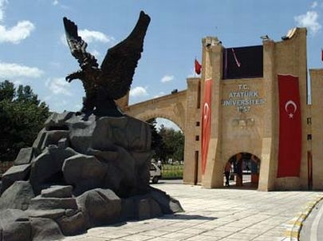

Erzurum
Erzurum is a city in eastern Turkey. It is situated 1757 meters (5766 feet) above sea level.

The city uses the double-headed Anatolian Seljuk Eagle as its coat-of-arms, a motif that was a common symbol throughout Anatolia and the Balkans in the medieval period.
Tourism
Little of medieval Erzurum survives beyond scattered individual buildings such as the citadel fortress, and the 13th century Cifte Minareli Medrese (the "Twin Minaret" madrasa). Visitors may also wish to visit the Cobandede Bridge, which dates back to late 13th century


Erzurum has some of the finest winter sports facilities in Turkey and hosted the 2011 Winter Universiade.

Cuisine
One specialty of Erzurum's cuisine is Cag Kebab. Although this kebab variety is of recent introduction outside its native region, it is rapidly attaining widespread popularity around Turkey.

Kadayif Dolmasi is an exquisite dessert made with walnut.